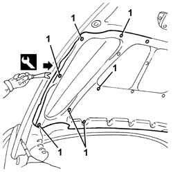
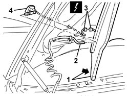
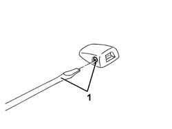

5050B10 FRONT WINDSCREEN WASHER JETS - R+R CLEAN AND/OR POSITION
- Path
- Procedures > 50 AUXILIARY UNITS > 5050 SCREEN WASHERS AND HEADLAMP WASH/WIPE > 5050B WINDSCREEN WASH/WIPE > 5050B10 FRONT WINDSCREEN WASHER JETS - R+R CLEAN AND/OR POSITION
- Kind
- repair procedure (removal / refitting; the operation number is the code)
- Applies to
- engines: 2.0 JTS, 3.2 V6, 1.9 JTD 16V; all production periods
- Interactive page
- https://sloeber94.github.io/elrnDB-aGt/en/#/125001564
Applies to: engines: 2.0 JTS, 3.2 V6, 1.9 JTD 16V; all production periods
 Removing
Removing
 Refitting
RefittingOpen the bonnet lid.
1. Using the special tool, release the retaining buttons at the side of the sound insulation lining.
 | Name | Country |
|---|---|---|
1 | Scraper blade | 1.823.015.000 |

Applies to: engines: 2.0 JTS, 3.2 V6, 1.9 JTD 16V; all production periods
1. Gently lower the sound insulation lining.
2. Disconnect the windscreen washer jet pipe.
3. Disconnect the electrical connection for the heated windscreen washer jet.
Name | Connector | |
|---|---|---|
3 | Left windscreen washer jet defrosting resistance | See O50 LEFT WINDSCREEN WASHER JET DEFROSTING RESISTANCE ( FRONT ) |
Name | Connector | |
|---|---|---|
3 | Right windscreen washer jet defrosting resistance | See O51 RIGHT WINDSCREEN WASHER JET DEFROSTING RESISTANCE ( FRONT ) |
4. Using pliers, release the retainers and remove the windscreen washer jet.

Applies to: engines: 2.0 JTS, 3.2 V6, 1.9 JTD 16V; all production periods
Refitting
RemovingCheck that the jet is not damaged or obstructed.
Connect the pipe to the windscreen washer jet.
Connect the electrical connection for the heated windscreen washer jet.
Fit the jet in the housing engaging the retainers.
Fit the soundproofing trim.
Engage the retaining buttons.
Close the bonnet lid.
1. Act on the screw to adjust the spray on the windscreen.
Test the operation of the windscreen washer jet.
